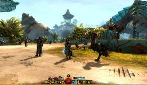

Sea of Thieves
Sea of Thieves es un videojuego de acción-aventura en primera persona desarrollado por Rare y distribuido por Xbox Game Studios, para las plataformas Xbox One y Microsoft Windows.El videojuego fue lanzado a la venta el 20 de marzo de 2018. El juego se describe como un "juego de aventuras de mundo compartido", lo que significa que grupos de jugadores se encontrarán regularmente durante sus aventuras, a veces formando alianzas, a veces enfrentándose cara a cara. El jugador asume el papel de un pirata que completa viajes de diferentes compañías comerciales para convertirse en la última leyenda pirata. Los jugadores deben alcanzar al menos el nivel 50 con 3 de las empresas comerciales para convertirse en una leyenda pirata.
Sea of Thieves ofrece la experiencia de piratasdefinitiva, desde la navegación y elcombate hasta la exploración y elsaqueo: todo para disfrutar de la vidapirata y convertirteenleyenda. No hay funcionesestablecidas, tienes total libertad para enfrentarte al mundo y a los demásjugadorescomodesees. Tanto sinavegasengrupo o ensolitario, acabaráscruzándote con otrastripulacionesenestaaventura de mundocompartido..., pero ¿serán amigos o enemigos? ¿Cómoresponderás?
Grounded
Grounded es un videojuego de aventura desarrollado por Obsidian Entertainment y publicado por Xbox Game Studios . Fue lanzado para Microsoft Windows y Xbox One en acceso anticipado en julio de 2020. Se lanzó por completo el 27 de septiembre de 2022.
El mundo es un lugar inmenso, precioso y peligroso (sobre todo cuando te han encogido al tamaño de una hormiga). Explora, construye y sobrevive, todo al mismo tiempo, en esta aventura multijugador de supervivencia en primera persona. ¿Podrás prosperar junto a las hordas de insectos gigantes, luchando por sobrevivir a los peligros del jardín trasero?
Guild Wars 2

Guild Wars 2 es un videojuego de rol multijugador que continua la secuela de Guild Wars, desarrollado por ArenaNet, filial de NCsoft.
El mundo abierto de Guild Wars 2 se basa en el descubrimiento y la exploración. Echa un vistazo a nuestra guía de contenido para ver sugerencias al comenzar tu aventura, consulta tu brújula para encontrar lugares interesantes... o escoge la dirección que más te guste y viaja hasta que sea la aventura la que te encuentre a ti. Tyria está llena de personajes con sus propias historias y objetivos, y tú recibirás recompensas por ayudarlos (o por frustrar sus planes) al completar corazones de prestigio y eventos dinámicos. Consulta nuestra nueva guía para jugadores nuevos para ver más consejos.
7 days to die
es un videojuego perteneciente al género de Videojuego de terror, mundo abierto, sandbox basado en voxel y supervivencia, creado por la empresa The Fun Pimps. Es un videojuego mash up de acción en primera y tercera persona, el videojuego combina el combate, la mejora del personaje por niveles, la elaboración de materiales, la construcción, el saqueo, la minería, la exploración, la comercialización, la agricultura y la personalización del personaje. Antes del lanzamiento en Steam se lanzó el 16 de agosto de 2013 y luego fue lanzado a través de un acceso temprano a través de Steam el 13 de diciembre de 2013 para Mac y PC. Las versiones para PlayStation 4 y Xbox One salieron a la venta el 28 de junio de 2016 a través de Telltale Publishing.
La versión Alfa de Windows del juego se lanzó el 16 de agosto de 2013 para las personas que pre-ordenaron el videojuego en micromecenazgo o en PayPal. A partir del 11 de agosto de 2013, el desarrollo del juego continúa con una campaña de micromecenazgo que finaliza el 15 de agosto. La fecha de lanzamiento estimada fue en mayo del año 2014 para Microsoft Windows; las versiones para Macintosh y Linux fueron planeadas para más adelante en el año.
ARK: Survival Envolved
Como hombre o mujer desnudo, congelado y muriendo de hambre en las costas de una isla misteriosa llamada ARK, debes cazar, recolectar, construir objetos, plantar cultivos, investigar tecnologías y construir refugios para soportar los elementos. Usa tu astucia y recursos para matar o domesticar dinosaurios y otros seres primitivos, y asóciate con otros jugadores o atácalos para sobrevivir, dominar... y escapar!
Ark: Survival Evolved es un videojuego de acción-aventura y supervivencia desarrollado por Studio Wildcard, Instinct Games, Efecto Studio y Virtual Basement. Lanzado oficialmente el 29 de agosto de 2017 para Windows, Xbox One, Nintendo Switch, PlayStation 4, IOS y Android. El acceso adelantado al juego comenzó para Windows el 2 de junio de 2015, para OS X y Linux el 1 de julio de 2015, y el programa Game Preview en Xbox One el 16 de diciembre de 2015. Los desarrolladores han confirmado que el juego será 100% compatible con PlayStation VR, el dispositivo de realidad virtual de PlayStation. En el juego, los jugadores deben sobrevivir en un mundo lleno de dinosaurios y otros animales prehistóricos que deambulan por el mapa, peligros naturales y otros jugadores potencialmente hostiles. En él existen variedades de frutas, verduras y alimentos los cuales servirán de ayuda para la supervivencia o en su defecto para el contraataque.